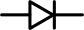
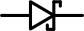
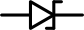

Эй диод
Дио́д — электронный элемент, обладающий различной проводимостью в зависимости от направления электрического тока. У него есть 2 полюса: анод и катод. Ток пропускается только от анода к катоду.

Основные характеристики
Падение прямого напряжения VF Вольт
Максимальное сдерживаемое обратное напряжение VDC Вольт
Максимальный прямой ток IF Ампер
Вольт-амперная характеристика
После того, как напряжение в прямом направлении превысит небольшой порог VF диод открывается и начинает практически беспрепятственно пропускать ток, который создаётся оставшимся напряжением.
Если напряжение подаётся в обратном направлении, диод сдерживает ток вплоть до некоторго большого напряжения VDC после чего пробивается и работает также, как в прямом направлении.
Виды диодов
Выпрямительный диод
Также известен как защитный, кремниевый
VF = 0,7 В
VDC — сотни или тысячи вольт
Открывается медлено
Восстанавливается после пробоя обратным током
Диод Шоттки
Шоттки — фамилия его изобретателя. Также известен как сигнальный, германиевый.
VF = 0,3 В
VDC — десятки вольт
Открывается быстро
Сгорает после пробоя обратным током
Диод Зеннера
Зеннер — фамилия его изобретателя. Также известен как стабилитрон
VF = 1 В
VDC — фиксированное значение на выбор
Умышленно используется в обратном направлении как источник фиксированного напряжения